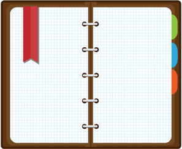

	<div class="description"><em>No vocabulário da maioria das pessoas, design significa aparência. É decoração de interiores. É o tecido de cortinas, do sofá. Mas para mim, nada poderia estar tão longe do significado de design. <br>Design é a alma fundamental de uma criação humana, que acaba se expressando em camadas externas sucessivas do produto ou serviço.
Steve Jobs</div>